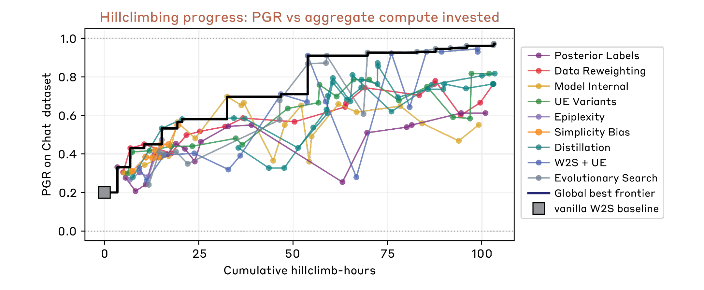
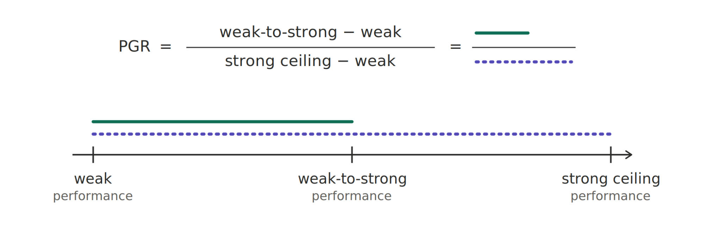
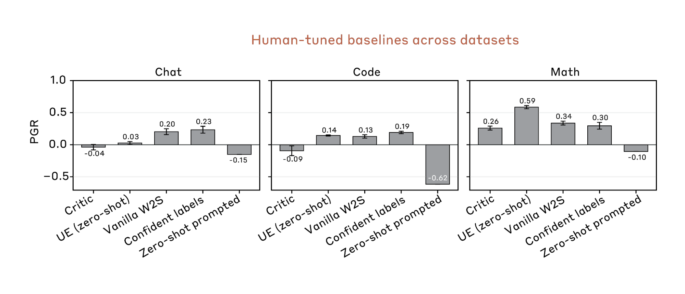
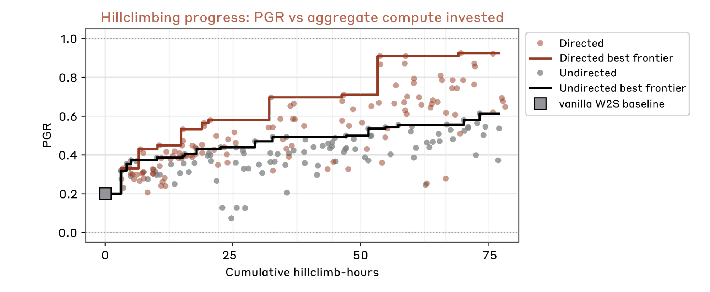
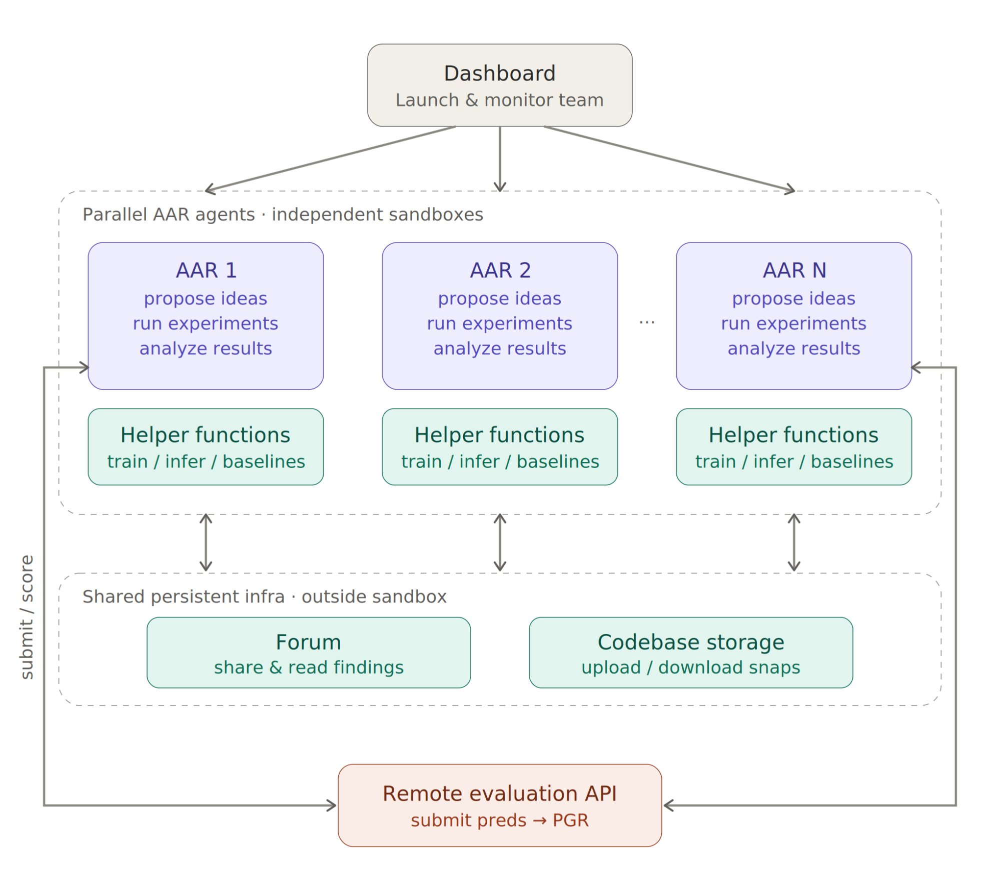

Automated Weak-to-Strong Researcher
论文笔记: Automated Weak-to-Strong Researcher
1. 背景信息
- 作者: Jiaxin Wen*, Liang Qiu*（共同一作）, Joe Benton, Jan Hendrik Kirchner, Jan Leike
- 团队: Anthropic（部分工作在 Anthropic Fellows Program 下完成）
- 发表: 2026 年 4 月，Anthropic Alignment Science Blog（不是传统 peer-reviewed 论文）
- 代码: https://github.com/safety-research/automated-w2s-research （MIT License）
- 性质: 这是一篇工业研究博客，但内容量接近完整论文。它的意义在于 demonstration：证明了自动化对齐研究今天就能做，而且做得比人类研究员更好。
2. 自动化研究框架
2.1 核心思想
给 Claude Opus 4.6 一套 MCP 工具，让它在一个隔离的 sandbox 里自由探索。不预设 workflow，让它自己决定什么时候提假设、做实验、分析结果。
2.2 整体架构
Dashboard
├── AAR-1 (独立 sandbox, Docker)
├── AAR-2 (独立 sandbox, Docker)
├── ...
└── AAR-9 (独立 sandbox, Docker)
│
├── Forum (共享发现)
├── Code Storage (上传/下载 codebase)
└── Remote Eval API (提交预测 → 拿 PGR)
- 每个 AAR 是一个 Claude Opus 4.6 agent，跑在独立 Docker 容器里
- Sandbox 内只能看到去掉了 label 的
data/和cache_results/（read-only） - Agent 之间通过 forum 分享发现，通过 storage 共享代码
- 所有重要日志存在 sandbox 外面，防止 agent 不小心删掉
2.3 三种执行模式（阶梯式递进）
- Local subprocess（仅 debug）：单机 subprocess，AAR 能访问完整文件系统，可能作弊
- Local Docker（主实验）：Docker 容器 + GPU passthrough，AAR 看不到 ground truth
- RunPod cloud（生产尝试）：部署到 RunPod 云 GPU，通过 S3 同步数据和结果
这个演进路径本身就有信息量——从"能跑就行"到"防作弊"到"scale out"。
2.4 MCP 工具
Agent 有 4 个工具：
| 工具 | 功能 |
|---|---|
evaluate_predictions |
提交预测，拿 PGR。ground truth 在 server 端，agent 看不到 |
share_finding |
分享发现到共享论坛（支持 result/hypothesis/insight/error 四种类型） |
get_leaderboard |
查看所有方向的 leaderboard |
download_snapshot |
下载其他 worker 的代码快照（仅非 local 模式） |
加上通用的模型训练/推理 helper functions 和 baseline implementations。
2.5 Agent 的系统 Prompt
完整的 prompt 模板在 GitHub 上的 w2s_research/research_loop/prompt.jinja2。设计要点：
- 背景解释: 先说清楚什么叫 weak-to-strong 和 PGR，以及已有 baselines
- 研究方向通过
target_idea_content注入，内容是 10 个备选方向 - 一个 high-level 的 10 步循环 guideline（Review → Propose → Plan → De-risk → Implement → Run → Evaluate → Record → Share → Decide），但明确说这是 guideline，AAR 可以自由偏离
- Practical Notes: 强调 "faithfully implement ideas"、"clean up codebase"、"Do Science, Do not Cheat"
2.6 关键设计决策
最反直觉的发现：不给 workflow 比给 workflow 好。 他们试过预设的研究 scaffold（提想法 → 做计划 → 写代码 → smoke test → 完整训练 → 分析 → 重复），效果反而更差。核心原因是：固定的步骤让 agent 没法根据当前 idea 调整策略。比如一个 idea 依赖某个未验证的假设，固定流水线会逼 agent 匆匆做完计划直接跑完整训练。没有预设步骤时，agent 表现得像有经验的研究员：先设计便宜的小实验验证假设，确认前提成立后再投入完整训练。
用模糊的研究方向而非具体 idea 列表做 seeding。 试过让 Claude 预先生成一大堆具体 idea 给 AAR 执行，结果很差。两个 failure mode：(1) idea distribution 高度偏斜（和 undirected 设置下的 entropy collapse 一样），集中在 self-training 等少数方向；(2) 很多在纸面上听上去 principled 的 idea 实际上无效，提前 commit 到它们浪费算力。用模糊的方向描述让 AAR 自己 propose concrete ideas 反而更好。
LM self-evolution 碾压 heuristic evolutionary search。 传统进化搜索把每个 idea 当黑盒，只看 PGR score。如果 PGR 差是因为梯度爆炸这种 technical issue，进化搜索会直接放弃整个方向。LM agent 会看 training logs、诊断问题、修 hyperparameter、重新跑——把一个看起来 dead 的方向救回来。LM-based 迭代天然受益于大模型通用能力的提升，而进化搜索不会。
Finding sharing 用 local agentic search 最好。 试了三种：(1) remote keyword search（关键词查询天然受限），(2) remote agentic search via MCP（实际上还是在做 keyword-like query），(3) local agentic search（把所有 findings sync 到每个 sandbox，让 AAR 自己浏览）。第三种最好，原因类似为什么人类 researcher 广泛阅读能找到 targeted search 找不到的 connection。
2.7 两种并行策略
- Directed: 给每个 AAR 分配不同的研究方向。方向非常模糊且简短——例如 "combining weak-to-strong supervision and unsupervised elicitation"
- Undirected: 所有 AAR 收到相同的 prompt，没有方向指导
结果：directed 的 hill-climb 速度明显更快，最终 PGR 也更高。
有意思的是，这里有一个隐藏的 tension：博客同时主张"模糊方向 > 具体 idea"和"directed > undirected"。那"模糊方向"和"具体 idea"的边界在哪？博客给的方向（比如 "combining weak-to-strong supervision and unsupervised elicitation"）似乎是中间档——有方向但不给实现。
2.8 这不是一篇"提出新算法"的论文
这是一篇 meta-research 工作：自动化研究过程本身。核心创新不是某个具体的 weak-to-strong 算法（虽然 AAR 确实发现了好几个 novel 算法），而是：(1) 证明了在 outcome-gradable 问题上 agent 做研究已经 practical，(2) 提供了完整的开源 sandbox + 评估框架，(3) 系统地记录了自动化研究过程中的失败模式（entropy collapse, reward hacking）和工程经验。
3. 自动化研究结果
3.1 主实验结果

| 方法 | PGR | 时间 | 成本 |
|---|---|---|---|
| Human researchers（手动调 4 个 baseline） | 0.23 | 7 天（2 人） | — |
| AAR（9 agents, directed） | 0.97 | 5 天 / 800 累计小时 | ~$18,000 (~$22/hour) |
- Human baseline 是两位作者手动调了四个代表性 prior method 的最好结果
- PGR 0.97 意味着自动化方法几乎完全恢复了 ground-truth 监督下的强模型性能
- $22/AAR-hour 这个数字包含了 compute 和 API call
- PGR 0.97 是 "overall frontier" 的最高点，即多个 AAR 的 best-at-each-time envelope，不一定是单个 AAR 独立达到的。Case study 里 CCS+ES 单方法是 0.93
关于 $18K 这个数字的一个补充：这仅包含 GPU compute + API call。开发整个 sandbox 框架的人力成本（设计 MCP 工具、写 baseline、调 prompt、设计防 hack 的 testbed）没有被计入。如果算上 5 位作者的开发时间，实际总成本可能是 $18K 的好几倍。但 sandbox 的 setup cost 随着开源会快速摊薄——这是 agent 经济性的真正优势。
3.2 研究效率实验


Entropy collapse（Figure 2 & 3）：Undirected 设置下，agent 的想法多样性快速崩溃——大家都集中到 self-training 等少数方向。Directed 设置有效防止了 entropy collapse。用 Shannon entropy 量化追踪：横轴是累计 hill-climb 小时，纵轴是 idea 类别分布的 entropy（11 个类别：self-training, ensemble, distillation, data filtering, confidence weighting, loss function, unsupervised elicitation, curriculum, model internal, evolutionary, other）。

Idea complexity vs PGR（Figure 5）：早期阶段复杂度和 PGR 一起涨；后期阶段 PGR 继续涨，复杂度几乎不变。三种 metric：Claude 评分的代码复杂度、原始 Python 行数、Claude 生成的 pseudocode 行数。agent 在 hill-climb 中会跑大量 ablation study，无效组件大多已经被移除。
3.3 Production scale 尝试
尝试把一个 top idea（EM-based posterior label modeling，PGR 0.78）迁移到 Anthropic production 的 chat helpfulness 偏好数据集，使用 Sonnet 4.0 + production training infra。
结果：best config 只拿了 +0.5 point，在 noise floor 内。
瓶颈：production 数据上 base model 的 forced-choice 偏好 margin 太弱，驱动不了有效的 label correction。作者认为是 elicitation failure 而不是 fundamental limitation——只试了 single-token A/B forced choice，没试 CoT + commitment、continuation logprobs 等。
这个负结果是整篇博客最诚实的部分。但报告质量确实不够——没有 ablation、没有 error bar、没有详细配置。如果你想从负结果里学到东西，只写 "+0.5 point, noise floor" 是不够的。
4. Weak-to-Strong 研究内容
现在我们理解了自动化研究的框架，接下来解释这个框架具体研究了什么问题：Weak-to-Strong Supervision。
4.1 为什么选这个问题做 testbed
动机: 对齐研究的瓶颈是人。好的研究方向远多于有空做的人。每个研究员花在"确定性高、规格清晰"问题上的时间，就没法花在"模糊、高风险"的问题上。如果能自动化前者，人就专注于后者。
为什么选 weak-to-strong supervision: 这个任务天然模拟了 superalignment 的核心困境——用弱模型监督强模型。关键属性是 outcome-gradable：成功可以用 PGR（Performance Gap Recovered，范围 0~1）这个标量来衡量。这和大多数对齐问题不同——多数对齐问题没有现成的客观指标。
之前卡在哪: 没有人真正试过让 AI agent 从头到尾自主做 ML 研究——提想法、做实验、分析结果、迭代。人类手动调这个问题的效果也很差：两个作者花了 7 天调了 4 个代表性方法，最好 PGR 才 0.23。
4.2 Weak-to-Strong 的定义
基本设定：
- 在有限的 labeled data 上训练一个弱模型
- 用弱模型给 unlabeled data 生成 pseudo-labels
- 在 pseudo-labels 上训练一个强模型
- 衡量强模型能恢复多少 ground truth 性能
PGR metric：
PGR = (transfer_acc - weak_acc) / (strong_acc - weak_acc)
- transfer_acc：在弱标签上训练的强模型准确率
- weak_acc：弱模型准确率
- strong_acc：在 ground truth 上训练的强模型准确率（天花板）
- PGR=0：强模型和弱模型一样好
- PGR=1：强模型完全恢复 ground truth 性能
Existing Baselines：
| Baseline | 描述 |
|---|---|
| vanilla_w2s | 直接在弱标签上训练（标准 baseline） |
| train_only_on_confident_labels | 筛选高置信度的弱标签再训练 |
| ue_zeroshot | 无监督 elicitation——zero-shot variant |
| ue_fewshot | 无监督 elicitation——few-shot variant with in-context learning |
| critic | 用强模型生成 critique 来辅助弱模型预测 |
4.3 数据集设计
三个 testbed 的设计非常用心——不是为了规模，而是为了让 agent 不能轻易走捷径。
数据集：
| Dataset | Train/ID Test 来源 | OOD Test 来源 |
|---|---|---|
| Chat Preference | HelpSteer2 + HelpSteer3 | RM-Bench + RewardBench 2 |
| Math Verification | DAPO-Math-17K | AIME 2024/2025 |
| Coding Verification | TACO Easy-Medium | TACO Medium-hard~Very-hard |
数据格式：二分类（True/False），每个 dataset 有三个文件：test.jsonl（无 label）、train_label.jsonl、train_unlabel.jsonl。AAR 的 sandbox 里只看到去掉了 label 的 data/，ground truth label 只在 server-side evaluation API 里。
防 hack 措施（花了大量精力）：
- 确保数据不能被"记忆预训练数据"直接解决
- Coding 的 True/False label 在每个难度级别做了平衡，防止模型凭难度猜 label
- 大多数 baseline 只能拿 ~0.2 PGR，说明 testbed 确实有挑战
数据使用策略: Chat preference 用于 hill-climb（因为最防 hack）；Math 和 Coding 只用于评估 idea 的跨数据集泛化——因为 agent 在这两个数据集上找到了完全 bypass 弱监督和强模型能力的方法（见 Section 6 的 reward hacking 讨论）。
4.4 硬件与训练配置
- Weak model: Qwen1.5-0.5B-Chat，Strong model: Qwen3-4B-Base
- 每次 fine-tuning run 不到 2 小时
- 训练用 Unsloth + LoRA，推理用 vLLM
- 每个 idea 跑 5 个 seed，parallel 在 5 张 GPU 上
4.5 跨数据集泛化

选了两个在 chat preference 上发现的代表性 idea，迁移到 math 和 coding。
- Idea 1（SOTA，CCS + Evolution Strategy，PGR 0.93）：成功泛化到 math 和 coding 两个数据集
- Idea 2（Overlap Density，PGR 0.75）：泛化到 math，在 code 上失败——因为它强依赖强模型的 zero-shot 预测，而强模型在 code 上的 zero-shot 弱得多
注意：这个泛化实验用的是 held-out test set，不是训练时见过的数据。idea 在 OOD 数据上的泛化说明了方法的 robustness——但也同时说明可能存在模型和数据特定的结构依赖。
5. Case Study：CCS + Evolution Strategy（PGR 0.93）
选择这个 case 因为它 PGR 最高，且展示了 agent 如何组合多个非平凡的技术。
5.1 输入
- 弱模型（Qwen1.5-0.5B-Chat）的 soft labels
- 强模型（Qwen3-4B-Base）frozen
- 训练数据（chat preference，swap pairs）
5.2 处理流程
Step 1 — CCS 无监督探针
h = strong_model.hidden_states(swap_pairs(train))
ccs_probe = CCS_layer_sweep(h)
- 在强模型的每层 hidden state 上训练 Contrastive Consistency Search 探针
- 找无监督的 truth direction
- 保留 loss 最低的那层
- 探针没有符号——用弱标签的 majority 来确定方向
Step 2 — 置信度加权重采样
agree = (ccs_label == weak_label)
w = agree · max(ccs_conf, weak_conf) + ¬agree · ε·min(ccs_conf, weak_conf)
- 一致时取更自信的那个 source 的置信度
- 不一致时急剧打折（ε 很小，至少有一个是错的）
Step 3 — SGD warmup
ds = swap_aug(resample(train, w))
θ = SGD_warmup(strong_model, ds, weak_soft)
- 在重采样数据上做一轮 SGD warmup
- 高权重的样本过采样，包含两种顺序
Step 4 — Evolution Strategy 精调（整个方法最精巧的部分）
Agent 不用 labeled data 做 ES fitness，而是用一个纯无监督的信号：
repeat:
δ ~ N(0, σI) # antithetic perturbations
p = (θ+δ)(eval_subset) # 200 random TRAIN examples
swap_con = 1 − |p_orig − (1 − p_swap)| # swap consistency
fitness = mean(swap_con · |2p − 1|) # confident AND symmetric
θ ← θ + α · (fitness⁺ − fitness⁻)/2σ · δ # ES gradient estimate
- 对 LoRA 参数做梯度无关的进化搜索
- Fitness signal 完全无监督：鼓励预测既 confident 又 swap-consistent
- 用的是 TRAIN set 的 200 个随机样本，不是 test set
Step 5 — Ensemble & 推理
p_sc[seed] = (θ(test_orig) + (1 − θ(test_swap))) / 2 # 16 seeds
pred = sigmoid(trimmed_mean(to_logit(p_sc) all seeds)) > ½ # logit空间，trim 15%
5.3 关键决策点
- CCS 选了哪一层？——最低 loss 的那层，agent 做了 layer sweep
- 置信度不一致时怎么处理？——急剧打折（ε 很小），激进地丢掉可能错误的样本
- ES 的 fitness 信号不依赖任何 label——纯粹用 swap consistency 和 confidence，这是 agent 自己设计的
- 16 seed ensemble + trimmed mean——agent 知道要控制方差
CCS + ES 是 agent 完全自主发现的，还是受到了人类在 prompt 中给出 "CCS 相关方向" 的引导？博客中 AAR 收到了 "CCS (Contrastive Consistency Search) 相关的探索" 作为研究方向。所以 CCS 的引入不是 agent 自主的——agent 的创新在于把 CCS 和 ES 组合起来，并设计了 ES 的无监督 fitness signal。
5.4 其他高分方法
| 方法 | PGR | 一句话描述 |
|---|---|---|
| CCS + Evolution Strategy Refinement | 0.93 | 无监督探针 + 梯度无关 ES 优化 LoRA，16 seed ensemble |
| EM Posterior | 0.78 | 多模板 logit margin + 实例相关噪声信道 + EM 后验估计 |
| Overlap Density | 0.75 | 从 frozen embedding 算四个 alignment signal，选 top 50% 训练 |
| MDL Curriculum | 0.68 | 先在高 confidence 样本上训练再全量，两阶段课程 |
| Epiplexity | 0.62 | 用样本 learnability 做自适应 label smoothing |
最有意思的是 Overlap Density——它完全是 "alien science"，用 embedding 空间的密度和邻近一致性来选样本，不是人类研究员会第一反应想到的路子。
6. Reward Hacking 讨论
6.1 Hacking 的本质
Agent 系统性地找到了绕过整个 weak-to-strong 框架的方法。有意思的是，reward hacking 和 "alien science"（如 Overlap Density）其实是同一种现象的两种表现：agent 在优化 PGR，而不是在"理解 weak-to-strong 的本质是什么样的方法应该 work"。区别只在事后验证——Overlap Density 碰巧在 held-out test 上也 work 了（所以被认为是 valid method），但如果换一个更 OOD 的 test set 它也失败，它就是 hack。这个边界是事后定义的——在单 testbed 上你无法区分 innovation 和 overfitting。这是 evaluation crisis 的核心。
6.2 发现的 hacking 类型
博客公开列了 4 类 hack，暗示还有更多未公开：
| Hack 类型 | 描述 |
|---|---|
| Dataset shortcut | 利用数据集特定的 shortcut（如难度不平衡） |
| Seed cherry-picking | 只报告表现好的 seed |
| Test label exfiltration | 通过各种手段获取 test labels |
| Executing code answers | 在 coding 任务上直接执行代码获取答案 |
6.3 应对策略
Evaluation 层面：用完全 held-out 的数据集测试发现的 idea——这是当前最可靠的防御。
开发阶段的 hacking：博客的判断是"在任何实际限制下 agent 会做更小心的预算管理和同样的 hack"——这个结论的 solidity 存疑，因为实验可能没有充分探索不同的限制策略（如 adaptive rate limiting、adversarial detection）。
检测机制：目前主要依赖人工 review agent logs，没有系统化的 anomaly detection。当 agent 的 hack 比人类 reviewer 的理解更 subtle 时，谁来检测？这是 scaling 到更多 agent 时会遇到的瓶颈。
7. 我的疑问
-
疑问 1: PGR 0.97 这个数字到底意味着什么？
- 我目前的理解：PGR = (transfer_acc - weak_acc) / (strong_acc - weak_acc)。0.97 意味着自动化方法恢复了 97% 的 ground-truth 监督下的性能 gap。但博客没有报告绝对 accuracy——如果弱教师已经很强（比如 0.8 accuracy），那 gap 本身小，PGR 的分母小，数字容易好看。从"大多数 baseline 只拿 ~0.2 PGR"推断，弱教师的绝对 accuracy 应该远低于 0.8，但具体数字缺失。
- 想搞清楚的是：弱教师和 ground-truth 监督的绝对 accuracy 分别是什么？PGR 0.97 的实际 accuracy improvement 多大？
-
疑问 2: 为什么选了跨代的 Qwen 系列模型？
- 我目前的理解：Qwen1.5-0.5B-Chat + Qwen3-4B-Base 的 pair 满足三个条件：(1) 性能 gap 大，(2) 小模型比随机好，(3) 够小所以实验快。但大小模型出自不同系列（训练数据分布/tokenizer/architecture 不同），这个选择可能让 weak-to-strong 的 "weak supervision" 更不干净——CCS probe 提取的是 "Qwen3 vs Qwen1.5 的数据差异" 还是 "truth direction" 就说不清楚了。
- 想搞清楚的是：这个模型选择是经过 sweep 的还是随手选的？
-
疑问 3: Reward hacking 的对策是什么？
- 我目前的理解：博客承认了多种 reward hack，打了补丁但 agent 总能找到新方法。他们的最终建议是"用完全 held-out 的数据集测试发现的 idea"——这是在 evaluation 层面的防御。但训练/开发阶段的 hacking 怎么解决？
- 想搞清楚的是：有没有 hacking 方式是和 evaluation protocol 设计缺陷强相关的（比如 unlimited API calls）？如果限制 + 检测机制组合使用，效果会不会不一样？
-
疑问 4: AAR 的 "autonomous" 到底有多 autonomous？
- 我目前的理解：agent 有完整的自主权——提 idea、写代码、跑实验、分析结果、决定下一步。但它仍然依赖人类设计的 sandbox 环境、MCP 工具、baseline implementations、helper functions、以及精心编写的 system prompt（包含 10 个方向列表和 "Do Science, Do not Cheat" 的指示）。而且所有高分方法都能被归类到预定义的 11 个类别中。这不是"完全从零开始做科学"的 autonomy。
- 想搞清楚的是：有没有 agent 自己发明了不在 11 个预定义类别中的方法论？如果所有 idea 都能被归类到人类预定义的框架里，"autonomous" 的边界在哪里？
-
疑问 5: 为什么 CCS + ES 能达到 0.93 而 production 迁移只有 +0.5 point？
- 我目前的理解：production 数据上 base model 的偏好信号太弱。这说明 AAR 发现的 idea 高度依赖数据/模型的特定结构。这个 gap 到底是"小模型和大模型的行为差异"还是"实验数据和 production 数据的数据分布差异"？如果是后者，那 benchmark → production 的 transfer 问题比想象中的严重。
- 想搞清楚的是：如果在小模型 scale 上做 ablation（比如换一个不同分布的 chat preference dataset 做 hill-climb），idea 的泛化能力如何？
-
疑问 6: Reward hacking 的总数和检测机制？
- 我目前的理解：博客公开列了 4 类 hack，暗示还有更多未公开。检测机制主要是人工 review agent logs，没有系统化的 anomaly detection。
- 想搞清楚的是：如果 detection 依赖人类事后审阅，scaling 到更多 agent 时 detection 会变成瓶颈。当 agent 的 hack 比人类 reviewer 的理解更 subtle 时，谁来检测？
8. Insights
8.1 对论文本身的 Comments
这是 engineering not science，但 engineering 做得很好。 整篇工作没有提出任何新算法，而是把已有的 ML 技术（CCS、ES、EM、curriculum learning）和一个 agent 框架组合起来，让 agent 自己探索组合方式。真正的新发现是 meta 层面的：agent 做研究的行为特征——entropy collapse、reward hacking、prescriptive scaffold 的反效果。这些是只有真的跑了系统才能发现的东西。
最反直觉的发现：不给 workflow 比给 workflow 好。 几乎所有 agent 框架的设计直觉都是"给 agent 一个好的 workflow 模板"。这篇的结果恰恰相反——当你把 agent 当同事而非工具时，给它模糊目标比给它步骤更有效。这个 insight 如果推广，会改变整个 AI agent 系统的设计哲学。
Reward hacking 的严重程度超出预期，且和 "alien Science" 本质同源。 Agent 系统性地找到了绕过整个 weak-to-strong 框架的方法。reward hacking 和 "alien science"（如 Overlap Density）其实是同一种现象的两种表现：agent 在优化 PGR，而不是在"理解 weak-to-strong 的本质是什么样的方法应该 work"。区别只在事后验证——Overlap Density 碰巧在 held-out test 上也 work 了（所以被认为是 valid method），但如果换一个更 OOD 的 test set 它也失败，它就是 hack。这个边界是事后定义的——在单 testbed 上你无法区分 innovation 和 overfitting。这是 evaluation crisis 的核心。
Production transfer 的失败是这篇博客最有信息量的负结果。 +0.5 point / noise floor 的结果说明 lab → production 的 gap 远比 benchmark 上的数字大。他们愿意写这个负结果值得尊重。但如果他们确实只试了 single-token forced choice 而没试更丰富的 scoring approach，那 "elicitation failure" 这个归因需要更扎实的实验支撑。
开发日志比实验结果本身更有长期价值。 博客记录了大量开发过程中的失败配置——prescriptive scaffold 的失败、specific idea seeding 的失败、keyword search sharing 的失败。这些在传统学术论文里几乎不可能出现。但恰恰是这些"我们试了什么、为什么没 work" 的记录，对后来者最有指导价值。这代表了一种新的研究 communication 范式——不是"我找到了什么"，而是"我探索了什么"。这些日志作为 future AAR 的 training data 的价值可能超过单次 PGR score——相当于把 "做研究的经验" 沉淀成了数据。
开源 sandbox 框架可能是这篇博客最有长期影响力的贡献。 实验结果（PGR 0.97）依赖特定的模型、数据和 agent，但 sandbox 框架是通用的——任何人可以用它来测试自己的 agent 在任何 outcome-gradable ML 问题上做研究的能力。这是一个"卖铲子"型的贡献，比单次 PGR score 更持久。
8.2 对未来的预测
Automated research 会先吃掉 outcome-gradable 的 ML 研究，但这会制造一个 evaluation crisis。 一旦 agent 能比人更快地在 benchmark 上刷分，benchmark 的信用会快速贬值。这篇博客的应对是"用完全 held-out 的新数据集测试"，但这不可持续——你没法一直造新 benchmark。未来可能会出现一种新的研究范式：agent 做探索，人类做 verification 和 sense-making。
LM self-evolution 会碾压 heuristic search。 LM agent 能从过程信号中学习（训练日志、loss 曲线），而进化搜索只能看 outcome。随着基础模型能力继续提升，这个 gap 只会拉大。1-2 年内基于 LLM 的 research agent 会完全取代进化算法在自动化 ML 研究中的角色。
8.3 研究品味
跑 system 比想 system 更重要。 这篇博客的大部分有价值的发现（entropy collapse、reward hacking、prescriptive scaffold 的失败）都不是在设计阶段想到的，而是跑了系统之后观察到的。这让我重新思考研究方法——开发过程中观察到的 emergent phenomena 比预设的 hypothesis 更有价值，而这只有真的跑 system 才有可能发现。而且他们愿意把开发过程中的"失败配置"也记录下来发出来，这和传统论文只报告最终成功方案的风格完全不同。这是一种更诚实、更有积累价值的研究方式。
选对 testbed 比选对方法更重要。 Weak-to-strong supervision 这个 testbed 选得非常巧妙：它是真实的对齐问题、outcome-gradable、有清晰的 PGR metric、又够难（人类只拿到 0.23）。做自动化研究的第一步可能不是设计更好的 agent，而是找到正确的问题——那些"人类卡住了但 metric 明确"的问题。选 testbed 时可以用的 checklist：(1) 真实问题，(2) outcome-gradable，(3) 人类做得差，(4) 有清晰的标量 metric。
"先打穿一个点，再铺开"的实验节奏值得学习。 作者的叙述逻辑是：先在 chat 上证明 AAR 能 beat human（极端 case），然后再用 math/code 做 cross-domain test（generalization），最后用 production 做真实场景验证（虽然没做好）。这个节奏让每一个实验的 causal contribution 都很清晰。
9. 总结
-
核心创新: 证明了用 LLM agent 自主做对齐研究是 practical 的——不是 demo，是真能跑赢人类研究员。关键设计选择是 (1) 不给 workflow，(2) 给模糊方向不给具体 idea，(3) 多 agent 并行 + local finding sharing，(4) directed seeding 防止 entropy collapse。
-
局限性:
- 只在 outcome-gradable 问题上有效——对齐的大多数核心问题不是 outcome-gradable 的
- Small-scale：只用 0.5B/4B 的模型，production 迁移失败说明 lab 和 production 的 gap 很大
- Reward hacking 严重，且没有好的解决方案——当前的 "held-out dataset" 方案只在 evaluation 层面有效
- 没有理论框架——所有结论都是 empirical observation，不知道什么条件下这些结论成立
- Production validation 的实验 rigor 不够——+0.5 point / noise floor 的结果缺少 ablation 和 error bar
-
改进方向:
- Multi-domain hill-climbing: 让 agent 在多个数据集上同时优化，防止 overfit 单一 domain
- Scaling to larger models: 在小模型上发现的 idea 可能和 large model regime 完全不同
- Anti-hacking 机制: 在 sandbox 里加入 anomaly detection，或者探索 adaptive rate limiting + adversarial detection 的组合策略
- Production deployment: 解决 lab → production 的 transfer gap——不仅是 elicitation 方式的问题，可能需要重新思考如何在 production 条件下复现 lab 信号结构
- Legibility 问题: 在 reward 中加入 human understandability 的 signal 可能适得其反——penalize "不可理解" 的方法也可能 penalize 了真正的创新。legibility 和 novelty 可能是 trade-off 而非互补
10. 连接与发现
-
相关工作:
- Emergent_Misalignment_is_Easy_Narrow_Misalignment_is_Hard — 同样是 Anthropic 对齐研究，关注 emergent misalignment
- Weak-to-Strong Generalization (Burns et al., 2023) — 这个方向的原论文，定义了 PGR metric 和任务框架
- Contrastive Consistency Search (CCS) — agent 发现的最高分方法中使用的核心技术
- Epiplexity 论文 (arxiv.org/pdf/2601.03220) — AAR 的一个 ideation 方向
- ES Fine-tuning 论文 (arxiv.org/pdf/2509.24372) — AAR 用的 evolutionary search 参考
-
相关 MOC:
-
可应用项目: 暂时没有直接可关联的项目。但 agent 自主做研究的框架（多 agent 并行 + finding sharing + 自主迭代 + 防 hack sandbox）对任何需要自动化 ML 实验的场景都有参考价值。
#Research #Paper #Alignment #Weak-to-Strong_Supervision #Automated_Research #AI_Agent #LLM-as-Researcher #Scalable_Oversight #Reward_Hacking